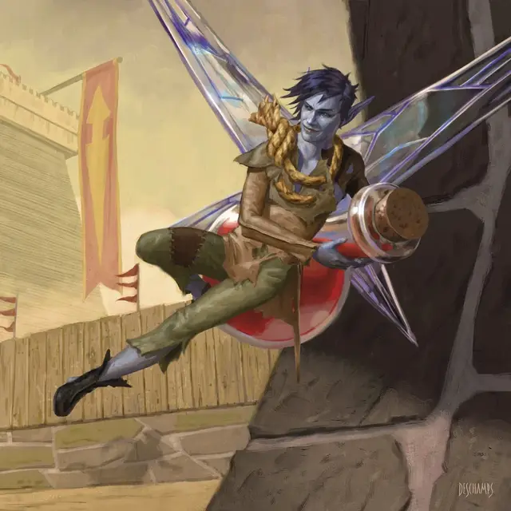

Фея-заемщик
Faerie Borrower
Крошечная Фея, хаотично-нейтральная

Класс Доспеха 15
Хиты 12 (5к4)
Скорость 10 футов, летая 30 футов
| мод | спас | ||
|---|---|---|---|
| СИЛ | 2 | −4 | −4 |
| ЛОВ | 20 | +5 | +5 |
| ТЕЛ | 10 | +0 | +0 |
| мод | спас | ||
|---|---|---|---|
| ИНТ | 13 | +1 | +1 |
| МДР | 12 | +1 | +1 |
| ХАР | 16 | +3 | +3 |
Навыки Ловкость рук +7, Скрытность +7
Чувства пассивное Восприятие 11
Языки Общий, Сильван
Опасность 1/2 (100 опыта)
Бонус мастерства +2
Особенности
Облёт. Фея не провоцирует атаки, когда вылетает за пределы досягаемости врага.
Действия
Клинок-игла. . Рукопашная атака оружием: +7 к попаданию, досягаемость 5 фт., одна цель. Попадание: 7 (1к4 + 5) колющего урона.
Магическая насмешка. Фея бросает магические насмешки в одно видимое ею существо, в пределах 60 футов. Существо должно преуспеть в спасброске Мудрости Сл 13, иначе получит 3 (1к6) урона психической энергией и будет с помехой совершать броски атаки и проверки характеристик до начала следующего хода феи.
Использование заклинаний. Фея может наложить одно из следующих заклинаний, не требующих материальных компонентов и использующих Харизму в качестве базовой характеристики для заклинания (Сл спасброска заклинания 13):
• Неограниченно: фокусы [prestidigitation];
• 1/день: безмолвный образ [silent image].
Реакции
Хитрое парирование. Сразу после получения урона фея может уменьшить получаемый урон на 2 (1к4).
Описание
«Толпа фей носилась из замка в замок, оставляя за собой след несчастной любви, разрушительных слухов и пропавших без вести семейных реликвий».
— Сказки о феях
Феи-заемщики - это крошечные воришки, которые крадут все, что попадается им под руку, чтобы вызвать замешательство и ужас. Рост фей-заёмщиков менее шести дюймов, с синей или сине-серой кожей и крыльями, напоминающими осколки разбитого стекла.
Феи-заемщики часто украшают себя украденными трофеями: ключами и иголками, заточенными как мечи, а также пуговицами и обрывками бумаги, превращенными в одежду. Несмотря на то что феи-заемщики часто хвастливы и любят высмеивать своих жертв, они быстро сматываются из проигранных битв на своих проворных крыльях.
Феи
Феи Элдраина - это крылатые эльфийские существа, похожие на спрайтов или пикси. Непредсказуемые, ненадежные и аморальные, они скрываются в диких землях и преследуют путников, которых считают нарушителями.
Уфы
Уфы - любопытные существа, встречающиеся в диких землях Элдраина. Хотя их часто считают глупыми, уфы магически связаны с миром природы и знают о тайной жизни деревьев, грибов и мха больше, чем большинство смертных. Хотя уфы и связаны с феями Элдраина, феи относятся к ним как к далеким (и несколько неловким) кузенам. Уфы могут быть представлены с помощью блоков характеристик пикси [pixie] или спрайтов [sprite].